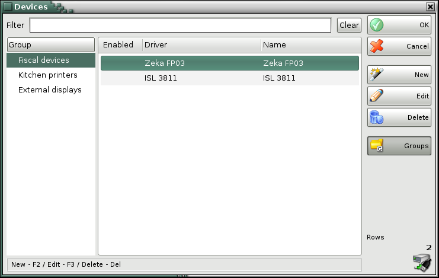
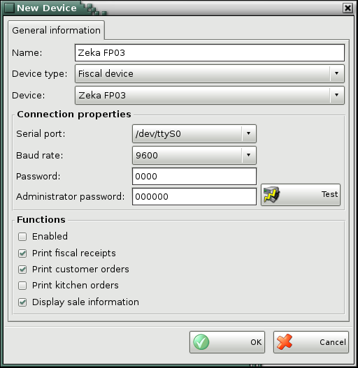
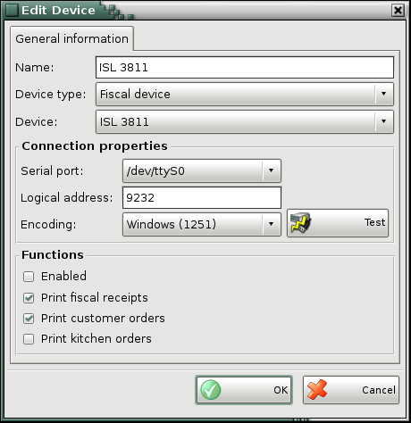

Devices
Use the Devices window to add a new device or to edit the list of devices.

You can use the New button to add a new device.
Enter the device name in the Name field and choose device type. it can be fiscal device, kitchen printer, external display, electronic scale or card reader. Select the coresponding device from Device drop-down list.
In connection properties select the serial port, which is coupled device, the baud rate and enter the password if it is necessary.
Button Test checks if the connection is successfully done.

You can modify all details of an existing device in the Edit Device window.

To delete a device from the list, select the corresponding row and click on the Delete button or press the Delete key.
Use Groups button to visualize the structure of dvices groups.
The Filter option allows you to quickly position on a particular device by typing all or part of its name. To remove specified filter click on the Clear button.
�2006-2015 Microinvest, All rights reserved